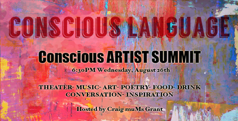
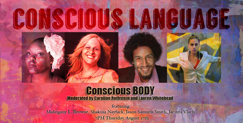
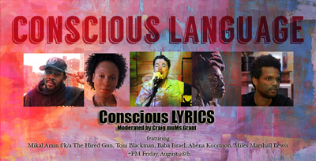
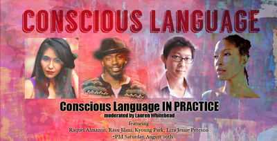

Poetic Theater Productions presents the 2nd annual
Conscious Language: Conversations and Performances on the Power of Language
4 evenings of performances and conversation with leaders in the field
showtimes:
August 26-29
Conscious ARTIST SUMMIT
Wed 8/26 6:30PM
An evening of live theater and music with refreshments provided by local restaurants and breweries, the Conscious Artist Summit is a gathering for artists to drink, celebrate our successes, and engage in lively discussion around the future efforts of conscious art.
With Special Performances of:
And then Came the Word by Timothy DuWhite
Directed by LA Williams
Featuring: Luciana Faulhaber, Zoë Flowers, and Nabil Viñas
Playing the Soundtrack on Blast by Jacqueline Jones LaMon
Directed by Alex Mallory
Featuring: Ryan F Johnson and Annalisa Ledson
and poetry from the "Emotional Competency in Policing Pilot Project" presented in collaboration with Firehouse Creative Productions
written by Maurice Decaul, Jenny Pacanowski, and Allison Zajac Batell
Conscious BODY
Thurs 8/27 7PM
Focusing on questions concerning how and what the body can communicate when used as the primary vehicle for art, the Conscious BODY evening will ask how the image of our body in the world relates to how we live and express our art.
Including performances and a panel moderated by Lauren Whitehead and Caroline Rothstein with: Mahogany L. Browne (HBO’s Brave New Voices, REDbone: A Biomythography),Shakina Nayfack (One Woman Show at Joe’s Pub, 2015 Lily Award Winner),Jason Samuels Smith (Bring in Da’Noise Bring in Da’Funk, Idlewild, “So You Think You Can Dance”, “Dancing With the Stars”), and Jacinta Paniagua Vlach (Liberation Dance Theater)
And a special reading of Teniece Divya Johnson's An Amazon's Prayer (Amerikkkan Assault on Blackness, a Ballet)
Conscious LYRICS
Friday 8/28 7PM
The Conscious LYRICS panel explores the importance of lyrics in language based art forms. How do the views and ideas expressed in music (lyrics)- particularly Hip Hop- influence the community in 2015?
Including musical performances and a panel moderated by Craig 'muMs' Grantwith: Mikal Amin f/k/a The Hired Gun (Fresh Roots Music, Re:Education and Say Word Entertainment), Toni Blackman (Hip Hop Ambassador/Artist), Baba Israel (Boom Bap Meditations), Abena Koomson (FELA!, Van Davis), and Miles Marshall Lewis (Arts & Culture Editor at Ebony.com, author: Irrésistible, There’s A Riot Goin’ On)
Conscious Language IN PRACTICE
Sat 8/29 7PM
Exploring varying definitions of what it means to be a conscious artist, the Conscious Language IN PRACTICE evening asks "what- if any- responsibilities do we have to the greater community?"
Including performances and a panel moderated by Lauren Whitehead with:
Raquel Almazan (La Paloma Prisoner, Death of the Doll), Rasu Jilani (MAPP International Productions), Kyoung Park (Sex and Hunger, disOriented), and Liza Jessie Peterson (The Peculiar Patriot, Love the Hard Way, Bamboozled)
Performances of 6 New Plays by our Conscious Language 2015 Workshop Participants: Nkosi Nkululeko, Scottt Raven, Mahlaney Wilson, Ashley August, April Ranger, and Andre James Smith
Directed by: Dennis A. Allen II, Dontonio Demarco, Katherine George, Alex Mallory, Andrew Willis Woodward, and Kat Yen.
Featuring our Conscious Language 2015 Actors:
Stefa Marín Alarcon, Jennifer Cendaña Armas, Stacey Dotson, Tamara Geisler, Edgar Eguia, Joell Jackson, Nabil Viñas, Ryan Johnson, Xandra Clark, Perri Yaniv, Olivia Nice, Adam Wennick, Jake Choi, Michael Rosete, Annalisa Velez, Ankur Rathee, Toni Ann DeNoble, Jordan Carey, Makeda Abraham, and Colista Turner
For an inside look at what Conscious Language is about: